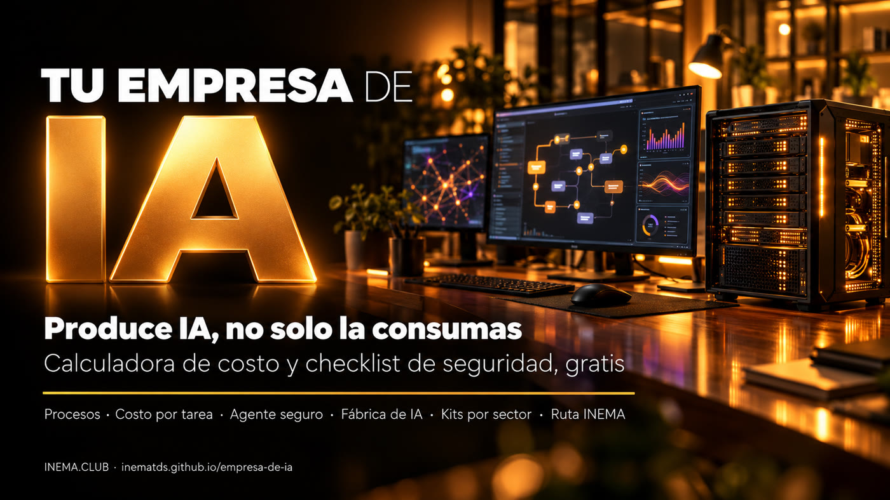

Descubre qué proceso entregarle primero a un agente, cuánto cuesta en dinero de verdad y si es seguro encenderlo.

Este es un kit gratuito para que el dueño de una pequeña o mediana empresa deje de usar ChatGPT a la suerte y ponga un agente de IA a trabajar en un proceso real. Son tres herramientas que funcionan aquí mismo en la página, sin registro: la Radiografía de procesos señala por dónde empezar, la calculadora muestra cuánto cuesta y cuánto devuelve, y el checklist dice si el agente es seguro para encenderlo. Después, la ruta lleva a los cursos y kits de INEMA para armar cada agente. Solo necesitas el navegador; nada sale de tu computadora.
En Berlín, en octubre de 2026, Jensen Huang (Nvidia) dijo que toda empresa se va a convertir en empresa de inteligencia artificial y que el camino es producir IA, no solo consumirla. Lo explicó con un pastel de cinco capas. Aquí está la misma idea traducida para el dueño de una empresa pequeña.
En la práctica: un agente que responde horarios y precios en el WhatsApp de la clínica solo, y pasa a la recepción lo que no sabe. Esa es la capa 5 funcionando sobre las otras cuatro.
Es la barrera número uno de las pymes en Brasil, por delante del costo (31%). La Radiografía ataca justo eso.
Serasa Experian, encuesta con pymes, 2026De las empresas en Brasil que usan IA, el 80% compra software listo y solo el 26% crea una solución propia. Es el "consumir" de Jensen.
Cetic.br, TIC Empresas 2025Previsión hasta 2027, por costo, valor poco claro y riesgo sin control. La calculadora y el checklist existen para que no entres en esa cuenta.
Gartner, previsión de junio de 2025Un proceso a la vez. Eliges, calculas, revisas la seguridad, haces un piloto de 30 días y mides. Si funcionó, pasas al siguiente de la fila.
Las herramientas corren en esta página. Los números quedan guardados solo en tu navegador; nada se envía a nadie.
Las tareas que se repiten cada semana en la empresa. Si no las tienes en la cabeza, pídele al equipo que las anote durante tres días.
Cuántas veces por semana ocurre cada tarea y cuántos minutos toma. Una estimación ya sirve para empezar.
En GitHub, la carpeta kit/ tiene la Radiografía y la calculadora en CSV para abrir en Excel o Google Sheets, y el checklist en texto (en portugués).
La página ya viene con el ejemplo de una clínica pequeña cargado. Cámbialo por los datos de tu empresa.
Anota las tareas que se repiten. Para cada una, indica cuántas veces por semana ocurre, cuántos minutos toma, si la regla es clara, si la información ya está en la computadora y qué tan grave es el daño si sale mal. La Radiografía te devuelve la fila de los tres primeros procesos y el kit INEMA para cada uno.
Cómo se calcula la nota: horas por mes × claridad de la regla × dato disponible ÷ riesgo. Es una regla para ordenar, no una verdad. Una tarea de riesgo alto puede entrar en la fila, pero solo con una persona aprobando cada respuesta.
Toma el primero de la fila. Compara el costo de hoy (personas haciéndolo) con el costo del agente (la cuenta de la IA más el tiempo de alguien revisando). La métrica que importa es el costo por tarea, contando la revisión y las tareas que vuelven a una persona.
Los valores que vienen cargados son un ejemplo, no el precio de ningún proveedor. Mide tu línea de base antes del piloto (cuántas tareas, cuánto tiempo) y repite la cuenta con los números reales después de 30 días.
El agente trabaja solo y toca archivos, cuentas y mensajes. La regla del keynote es el mínimo privilegio: solo accede a lo que la tarea necesita, y alguien lo supervisa. Marca lo que ya está garantizado.
Los ítems 2, 4 y 10 son obligatorios: sin cualquiera de ellos el resultado no pasa de piloto con supervisión.
Basado en el principio del mínimo privilegio y en los riesgos del OWASP Top 10 para aplicaciones con agentes (2026), traducido para quien no es técnico. La versión en texto está en kit/checklist-agente-seguro.md (en portugués).
Arma el agente del primer proceso con el kit que indica la Radiografía. Durante los 30 días, anota cada semana: cuántas tareas hizo, cuántas volvieron a una persona, cuánto costó la cuenta de la IA y cuántas quejas hubo. Al final, rehaz la calculadora con esos números. Si la diferencia es positiva y el checklist sigue en verde, pasa al segundo de la fila.
Todo abierto y gratuito (los cursos están en portugués). La Radiografía ya te indica uno de estos para cada tarea de tu fila.
Asistente de WhatsApp que nunca inventa respuestas (en portugués).
Atención por sectorClínica, gimnasio, fisioterapia y nutrición, listos para adaptar (en portugués).
Agenda y reservasRestaurante y hotel, con reservas a cargo del agente (en portugués).
DiagnósticoCómo mapear los procesos de una empresa antes de automatizar (en portugués).
ImplementaciónImplementador de IA para pymes: procesos, ROI y entrega (en portugués).
Personas y procesosCómo se reorganizan personas, procesos y agentes (en portugués).
SeguridadUsa agentes de IA sin quemarte (en portugués).
Contexto del negocioLo que el agente necesita saber de tu empresa, en un solo lugar (en portugués).
HerramientasHaz que la IA use las herramientas que ya tienes, con reglas (en portugués).
GestiónCómo gestionar procesos con agentes en el día a día (en portugués).
Fábrica de IAIA en tu máquina: privacidad y agentes 24 horas (en portugués).
Primeros pasosDe ChatGPT a tu primer agente, en cuatro escalones (en portugués).
Esta es la primera entrega. Las próximas piezas completan el pastel.